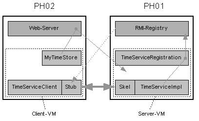

49.2 Aufbau eines einfachen Uhrzeit-Services
49.2.1 Vorgehensweise
In diesem Abschnitt wollen wir eine einfache Client-Server-Anwendung
entwickeln und dabei die wichtigsten Eigenschaften von RMI vorstellen.
Dazu soll ein Remote-Interface TimeService
geschrieben werden, das zwei Methoden getTime
und storeTime definiert. Mit
getTime kann ein Client die
aktuelle Uhrzeit auf dem Server ermitteln und sie sich als String
zurückgeben lassen. storeTime
erledigt prinzipiell dieselbe Aufgabe, speichert die Uhrzeit aber
in einem TimeStore-Objekt, an
dem wir die Besonderheiten des Austauschs von Objekttypen zeigen wollen.
Der Server, der auf einem Computer mit dem Namen »ph01«
läuft, wird ein einziges Remote-Objekt instanzieren und bei der
ebenfalls auf »ph01« laufenden RMI-Registry unter dem Namen
»TimeService« registrieren. Ein einfaches Client-Programm
auf dem Rechner »ph02« wird bei der RMI-Registry eine Remote-Referenz
auf das TimeService-Objekt beschaffen,
mit seiner Hilfe die Uhrzeit des Servers abfragen und die Ergebnisse
auf seiner eigenen Console ausgeben.
Da insbesondere das Setup der Systeme einigen Aufwand erfordert, wollen
wir die einzelnen Schritte genau erläutern:
- Zunächst wird das Remote-Interface erläutert.
- Anschließend stellen wir seine Implementierung vor und zeigen,
wie Stub und Skeleton erzeugt werden.
- Danach erläutern wir, wie die RMI-Registry und der Server
gestartet werden und welche Vorbereitungen dazu erforderlich sind.
- Schließlich implementieren wir eine Client-Klasse und zeigen,
wie sie gestartet und zum Zugriff auf den Server verwendet wird.
49.2.2 Das Remote-Interface
Das Remote-Interface definiert die Schnittstelle zwischen Client und
Server. Bei seiner Entwicklung müssen einige Regeln beachtet
werden:
- Das Remote-Interface muss aus dem Interface Remote
des Pakets java.rmi
abgeleitet und als public
deklariert werden.
- Jede Methode muss die Exception RemoteException
(ebenfalls aus dem Paket java.rmi)
deklarieren. Hiermit werden alle Arten von Netzwerkproblemen oder
Verbindungsstörungen zwischen Client und Server angezeigt.
Nur die im Remote-Interface definierten Methoden stehen später
den Clients zur Verfügung. Werden später bei der Implementierung
des Servers weitere Methoden hinzugefügt, so bleiben sie für
den Client unsichtbar. Das Remote-Interface für unseren Uhrzeit-Service
sieht so aus:
001 /* TimeService.java */
002
003 import java.rmi.*;
004
005 public interface TimeService
006 extends Remote
007 {
008 public String getTime()
009 throws RemoteException;
010
011 public TimeStore storeTime(TimeStore store)
012 throws RemoteException;
013 }
|
TimeService.java |
Listing 49.1: Das Remote-Interface für den Uhrzeit-Service
Die Methode getTime liefert
einen String mit der aktuellen Server-Uhrzeit im Format »h[h]:m[m]:s[s]«.
Die Methode storeTime erwartet
ein Objekt vom Typ TimeStore,
um den Uhrzeitstring dort hineinzuschreiben. Da Objekte (wegen der
zur Übertragung erforderlichen Serialisierung) per Wert übergeben
werden, würde jede Änderung an ihnen auf Client-Seite unsichtbar
bleiben. storeTime gibt daher
das TimeStore-Objekt mit der
eingefügten Uhrzeit als Rückgabewert an den Client zurück.
TimeStore wird als Interface
wie folgt definiert:
001 import java.io.Serializable;
002
003 public interface TimeStore
004 extends Serializable
005 {
006 public void setTime(String time);
007
008 public String getTime();
009 }
|
TimeStore.java |
Listing 49.2: Das TimeStore-Interface
Mit setTime wird ein als String
übergebener Uhrzeitwert gespeichert, mit getTime
kann er abgefragt werden.
49.2.3 Implementierung des Remote-Interface
Die Implementierungsklasse
Nach der Definition des Remote-Interface muss dessen Implementierung
(also die Klasse für die Remote-Objekte) realisiert werden. Dazu
erstellen wir eine Klasse TimeServiceImpl,
die aus UnicastRemoteObject
abgeleitet ist und das Interface TimeService
implementiert. UnicastRemoteObject
stammt aus dem Paket java.rmi.server
und ist für die Details der Kommunikation zwischen Client und
Server verantwortlich. Zusätzlich überlagert sie die Methoden
clone,
equals,
hashCode
und toString
der Klasse Object,
um den Remote-Referenzen die Semantik von Referenzen zu verleihen.
Das folgende Listing zeigt die Implementierung:
001 /* TimeServiceImpl.java */
002
003 import java.rmi.*;
004 import java.rmi.server.*;
005 import java.util.*;
006
007 public class TimeServiceImpl
008 extends UnicastRemoteObject
009 implements TimeService
010 {
011 public TimeServiceImpl()
012 throws RemoteException
013 {
014 }
015
016 public String getTime()
017 throws RemoteException
018 {
019 GregorianCalendar cal = new GregorianCalendar();
020 StringBuffer sb = new StringBuffer();
021 sb.append(cal.get(Calendar.HOUR_OF_DAY));
022 sb.append(":" + cal.get(Calendar.MINUTE));
023 sb.append(":" + cal.get(Calendar.SECOND));
024 return sb.toString();
025 }
026
027 public TimeStore storeTime(TimeStore store)
028 throws RemoteException
029 {
030 store.setTime(getTime());
031 return store;
032 }
033 }
|
TimeServiceImpl.java |
Listing 49.3: Implementierung des Uhrzeit-Services
In getTime wird ein GregorianCalendar-Objekt
instanziert und mit der aktuellen Uhrzeit belegt. Aus den Stunden-,
Minuten- und Sekundenwerten wird ein StringBuffer
erzeugt und nach Konvertierung in einen String
an den Aufrufer zurückgegeben. storeTime
ist noch einfacher aufgebaut. Es erzeugt zunächst einen Uhrzeitstring,
speichert diesen in dem als Parameter übergebenen TimeStore-Objekt
und gibt es an den Aufrufer zurück.
Erzeugen von Stub und Skeleton
Nachdem die Implementierungsklasse angelegt wurde, müssen Stub
und Skeleton erzeugt werden. Diese Arbeit braucht glücklicherweise
nicht per Hand erledigt zu werden, sondern kann mit Hilfe des Programms
rmic
aus dem JDK ausgeführt werden. rmic
erwartet den Namen der Implementierungsklasse als Argument (falls
erforderlich, mit der vollen Paketbezeichnung) und erzeugt daraus
die beiden Klassendateien für Stub und Skeleton. Aus der Klasse
TimeServiceImpl werden die Klassen
TimeServiceImpl_Stub und TimeServiceImpl_Skel
erzeugt und als .class-Dateien zur Verfügung
gestellt.
rmic
ist ein Kommandozeilenprogramm, das ähnliche Optionen wie javac
kennt. Im einfachsten Fall reicht es aus, den Namen der Implementierungsklasse
anzugeben:
rmic TimeServiceImpl
49.2.4 Registrieren der Objekte
Starten der RMI-Registry
Um den TimeService verwenden
zu können, muss wenigstens eine Instanz von TimeServiceImpl
erzeugt und bei der RMI-Registry registriert werden. Diese wird im
JDK durch das Kommandozeilenprogramm rmiregistry
zur Verfügung gestellt. Es wird auf dem Server gestartet und
muss so lange laufen, wie Remote-Objekte dieses Servers verwendet
werden sollen. Der einzige Parameter von rmiregistry
ist eine optionale TCP-Portnummer. Diese gibt an, auf welchem TCP-Port
eingehende Anfragen empfangen werden sollen. Sie ist standardmäßig
auf 1099 eingestellt, kann aber auch auf einen anderen Wert gesetzt
werden.
Unter UNIX kann man die RMI-Registry im Hintergrund starten:
rmiregistry &
Unter Windows kann sie direkt von der Kommandozeile oder mit Hilfe
des start-Kommandos in einer
eigenen DOS-Box gestartet werden:
start rmiregistry
Das Programm zur Registrierung des Remote-Objekts
Nachdem rmiregistry
läuft, können die zur Verfügung stehenden Remote-Objekte
registriert werden. Wir verwenden dazu eine eigene Klasse TimeServiceRegistration,
in deren main-Methode
die Registrierung vorgenommen wird:
001 /* TimeServiceRegistration.java */
002
003 import java.rmi.*;
004
005 public class TimeServiceRegistration
006 {
007 public static void main(String[] args)
008 {
009 System.setSecurityManager(new RMISecurityManager());
010 try {
011 System.out.println("Registering TimeService");
012 TimeServiceImpl tsi = new TimeServiceImpl();
013 Naming.rebind("TimeService", tsi);
014 System.out.println(" Done.");
015 } catch (Exception e) {
016 System.err.println(e.toString());
017 System.exit(1);
018 }
019 }
020 }
|
TimeServiceRegistration.java |
Listing 49.4: Registrierung von Remote-Objekten
Das Programm erzeugt eine neue Instanz von TimeServiceImpl
und übergibt diese unter dem Namen »TimeService« an
die RMI-Registry. Dazu wird die statische Methode rebind
der Klasse Naming
aufgerufen. Naming
ist die Programmierschnittstelle zur RMI-Registry, sie stellt folgende
Methoden zur Verfügung:
public static void bind(String name, Remote obj)
throws AlreadyBoundException,
MalformedURLException,
RemoteException
public static void rebind(String name, Remote obj)
throws RemoteException,
MalformedURLException
public static void unbind(String name)
throws RemoteException,
MalformedURLException,
NotBoundException
public static Remote lookup(String name)
throws NotBoundException,
MalformedURLException,
RemoteException
public static String[] list(String name)
throws RemoteException,
MalformedURLException
|
java.rmi.Naming |
Mit bind
wird ein Remote-Objekt unter einem vorgegebenen Namen registriert.
Gab es bereits ein Objekt dieses Namens, wird eine Ausnahme ausgelöst.
rebind
erledigt dieselbe Aufgabe, ersetzt jedoch ein eventuell vorhandenes
gleichnamiges Objekt. Mit unbind
kann ein registriertes Objekt aus der RMI-Registry entfernt werden.
Die Methode lookup
dient dazu, zu einem gegebenen Namen eine Remote-Referenz zu erhalten.
Sie wird uns beim Client wiederbegegnen. Mit list
kann eine Liste der Namen von allen registrierten Remote-Referenzen
beschafft werden.
Die an Naming
übergebenen Namen haben das Format von URLs (siehe Abschnitt 41.1.1).
Die Dienstebezeichnung ist »rmi«, der Rest entspricht einer
HTTP-URL. Eine gültige rmi-URL wäre also beispielsweise:
rmi://ph01:1099/TimeService
Der Server heißt hier »ph01« und wird auf Port 1099
angesprochen, der Name des Remote-Objekts ist »TimeService«.
Servername und Portnummer sind optional. Fehlt der Server, wird »localhost«
angenommen, fehlt die Portnummer, erfolgt die Kommunikation auf TCP-Port
1099. Aus diesem Grund haben wir bei der Registrierung des TimeServiceImpl-Objekts
mit »TimeService« lediglich den Namen des Remote-Objekts
angegeben.
Ändern der Policy-Datei
Die in Zeile 009 stehende Installation
der Klasse RMISecurityManager
ist erforderlich, weil der Server den Code für die auf dem Client
erzeugte TimeStore-Implementierung
dynamisch laden soll. Aus Sicherheitsgründen ist das Laden von
externem Bytecode aber nur dann erlaubt, wenn ein SecurityManager
installiert ist. Um diesen mit den erforderlichen Rechten auszustatten,
muss (ab dem JDK 1.2) die Policy-Datei auf dem Server um folgenden
Eintrag ergänzt werden:
grant {
permission java.net.SocketPermission "ph01:1099", "connect,resolve";
permission java.net.SocketPermission "ph02:80", "connect";
};
Der erste Eintrag ermöglicht die TCP-Kommunikation mit der RMI-Registry
auf Port 1099. Der zweite ermöglicht es dem Server, auf TCP-Port
80 eine Verbindung zu dem Rechner mit dem Namen »ph02« herzustellen.
Dort wird später der Webserver laufen, mit dem der Client die
Klassendatei mit der TimeStore-Implementierung
zur Verfügung stellt.
Am besten ist es, die entsprechenden Einträge in der benutzerspezifischen
Policy-Datei vorzunehmen. Sie liegt im Home-Verzeichnis des aktuellen
Benutzers und heißt .java.policy.
Auf Windows 95/98-Einzelplatzsystemen liegt sie im Windows-Verzeichnis
(meist c:\windows). Weitere Informationen
zur Policy-Datei sind im Kapitel über Sicherheit und Kryptografie
in Abschnitt 50.3.4 zu finden.
Registrierung des Remote-Objekts
Nach dem Ändern der Policy-Datei kann das Programm zur Registrierung
des Remote-Objekts gestartet werden. Damit der Server später
die dynamischen Klassendateien findet, muss das System-Property »java.rmi.server.codebase«
gesetzt werden. In unserem Fall handelt es sich um eine http-Verbindung
in das WebServer-Root-Verzeichnis auf dem Rechner »ph02«.
Der Aufruf des Programms sieht damit wie folgt aus:
c:\--->java -Djava.rmi.server.codebase=http://ph02/ TimeServiceRegistration
Registering TimeService
Done.
Er ist nur erfolgreich, wenn die RMI-Registry läuft und die entsprechenden
Änderungen in der Policy-Datei vorgenommen wurden. Andernfalls
wird eine Ausnahme ausgelöst und das Programm mit einer Fehlermeldung
beendet. War die Registrierung erfolgreich, wird die main-Methode
beendet, das Programm läuft aber trotzdem weiter. Das liegt daran,
dass der Konstruktor von UnicastRemoteObject
einen neuen Thread zur Kommunikation mit der RMI-Registry aufgebaut
hat, in dem er unter anderem das soeben erzeugte Objekt vorhält.
49.2.5 Zugriff auf den Uhrzeit-Service
Nach der Implementierung des Servers wollen wir uns nun die Realisierung
der Client-Seite ansehen. Dazu soll das folgende Programm verwendet
werden:
001 /* TimeServiceClient.java */
002
003 import java.rmi.*;
004
005 public class TimeServiceClient
006 {
007 public static void main(String[] args)
008 {
009 try {
010 String host = "ph01";
011 String port = "1099";
012 String srv = "TimeService";
013 String url = "rmi://" + host + ":" + port + "/" + srv;
014 System.out.println("Looking-up TimeService " + url);
015 TimeService ts = (TimeService)Naming.lookup(url);
016 System.out.println(" Server time is " + ts.getTime());
017 System.out.print(" MyTimeStore contains ");
018 TimeStore tsd = new MyTimeStore();
019 tsd = ts.storeTime(tsd);
020 System.out.println(tsd.getTime());
021 } catch (Exception e) {
022 System.err.println(e.toString());
023 System.exit(1);
024 }
025
026 }
027 }
|
TimeServiceClient.java |
Listing 49.5: Der TimeService-Client
Das Programm erstellt zunächst den URL-String zur Suche in der
RMI-Registry. Er lautet »rmi://ph01:1099/TimeService« und
wird in Zeile 015 an die Methode
lookup
der Klasse Naming
übergeben. Falls auf dem Rechner »ph01« eine RMI-Registry
auf Port 1099 läuft und ein Objekt mit dem Namen »TimeService«
vorhält, wird durch diesen Aufruf eine passende Remote-Referenz
erzeugt und der Variablen ts
zugewiesen.
Deren Methode getTime wird in
Zeile 016 aufgerufen und über
die Stub-Skeleton-Verbindung an das TimeServiceImpl-Objekt
des Servers weitergeleitet. Der dort erzeugte Rückgabewert wird
in umgekehrter Richtung an den Client zurückgegeben (die Klasse
String
ist standardmäßig serialisierbar) und auf dessen Konsole
ausgegeben. Damit das Programm funktioniert, muss zuvor allerdings
die Stub-Klasse TimeServiceImpl_Stub.class
in das Startverzeichnis der Client-Klasse kopiert werden. Obwohl auch
das dynamische Übertragen von Stubs leicht möglich wäre,
haben wir es hier aus Gründen der Übersichtlichkeit nicht
realisiert.
In Zeile 018 wird eine Instanz
der Klasse MyTimeStore erzeugt
und an die Methode storeTime
des Remote-Objekts übergeben. Dort wird die aktuelle Uhrzeit
des Servers eingetragen und das Objekt als Rückgabewert an den
Aufrufer zurückgegeben. Vor der Rückübertragung wird
es nun ebenfalls serialisiert und landet nach der Deserialisierung
durch den Client in Zeile 019
in der Variablen tsd. Der darin
enthaltene Uhrzeitstring wird dann ebenfalls auf der Console ausgegeben.
Die im Client verwendete Klasse MyTimeStore
ist sehr einfach aufgebaut:
001 /* MyTimeStore.java */
002
003 import java.io.*;
004
005 public class MyTimeStore
006 implements TimeStore, Serializable
007 {
008 String time;
009
010 public void setTime(String time)
011 {
012 this.time = time;
013 }
014
015 public String getTime()
016 {
017 return this.time;
018 }
019 }
|
MyTimeStore.java |
Listing 49.6: Die Klasse MyTimeStore
Sie implementiert das Interface TimeStore,
um zu Parameter und Rückgabewert der TimeService-Methode
storeTime kompatibel zu sein.
Das Interface Serializable
implementiert sie dagegen, um vom RMI-Laufzeitsystem zwischen Client
und Server übertragen werden zu können.
Die Klasse MyTimeStore ist zunächst
nur auf dem Client bekannt und wird dort übersetzt. Wie eingangs
erwähnt, besitzt RMI die Fähigkeit, Bytecode dynamisch nachzuladen.
Dazu wird allerdings kein eigenes, sondern das aus dem World Wide
Web bekannte HTTP-Protokoll verwendet. Wie ein Web-Browser fragt also
einer der beiden Teilnehmer per HTTP-GET-Transaktion (siehe Abschnitt 48.2.4)
bei seinem Partner nach der benötigten Klassendatei.
Damit der Server den Bytecode für MyTimeStore
laden kann, muss also auf dem Client ein Webserver laufen, der den
Bytecode auf Anfrage zur Verfügung stellt. Wir können dazu
einfach den in Abschnitt 48.3.3
entwickelten ExperimentalWebServer
verwenden und vor dem Aufruf des Client-Programms in dem Verzeichnis
mit der Datei MyTimeStore.class starten:
c:\--->start java ExperimentalWebServer 80
Nun kann das Client-Programm gestartet werden:
c:\--->java TimeServiceClient
Vorausgesetzt, dass die Server-Programme wie zuvor beschrieben gestartet
wurden, die Klassendateien MyTimeStore.class,
TimeServiceClient.class und TimeServiceImpl_Stub.class
auf dem Client vorhanden sind und der Webserver läuft, erhalten
wir nun die Verbindung zum Server und die Ausgabe des Clients sieht
etwa so aus:
Looking-up TimeService rmi://ph01:1099/TimeService
Server time is 21:37:47
MyTimeStore contains 21:37:48
Abbildung 49.3 stellt die Zusammenhänge
noch einmal bildlich dar:

Abbildung 49.3: Kommunikation im RMI-Beispiel
49.2.6 Ausblick
Mit dem vorliegenden Beispiel wurden die grundlegenden Mechanismen
von RMI vorgestellt. In der Praxis wird man meist etwas mehr Aufwand
treiben müssen, um eine stabile und performante RMI-Applikation
zu erstellen. Nachfolgend seien einige der Aspekte genannt, die dabei
von Bedeutung sind:
- Zugriffe auf die RMI-Registry können je nach Konfiguration
der Systeme recht kostspielig sein. Es ist daher sinnvoll, nur eines
oder wenige Bootstrap-Objekte über die Registry zu laden und
an sie das Beschaffen weiterer Remote-Referenzen zu delegieren.
- Die RMI-Registry bietet lediglich eine sehr einfache Abbildung
von Namen auf Remote-Objekte. Hierarchische Namensräume, dynamische
Objektsuche, Lastverteilung oder ähnliche Eigenschaften fehlen
ihr dagegen. Möglicherweise ist es besser, einen anderen Namens-Service
zu verwenden. Mit JNDI (Java Naming
and Directory Interface) steht dabei
seit dem JDK 1.3 bereits eine mögliche Alternative standardmäßig
zur Verfügung.
- Das dynamische Laden von Bytecode wurde hier nur angedeutet. In
der Praxis sollen möglicherweise auch Stubs dynamisch geladen
werden. Andererseits kann vielleicht nicht jeder Client einen eigenen
Webserver zur Verfügung stellen. Die Verteilung des Bytecodes
ist also ebenso zu organisieren wie die Verteilung der Objekte.
- Auch auf den konkurrierenden Zugriff mehrerer Clients auf ein
und dasselbe Remote-Objekt sind wir nicht eingegangen. Tatsächlich
ist es in der Regel so, dass das RMI-Laufzeitsystem für jeden
Zugriff eines Clients einen eigenen Thread erzeugt und somit parallel
auf das Remote-Objekt zugegriffen wird. Die RMI-Spezifikation schreibt
konsequenterweise vor, die Remote-Objekte thread-sicher zu implementieren.